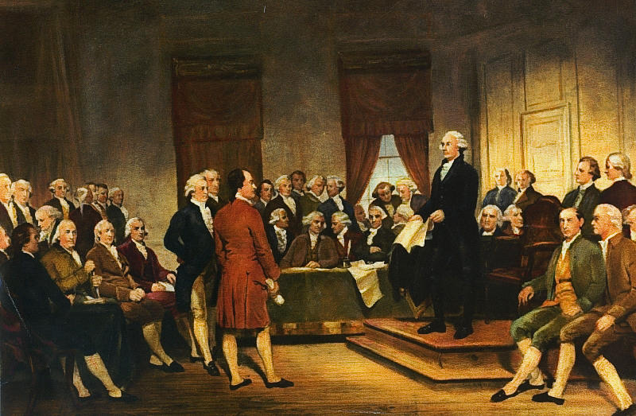

A Brief History
After winning the Revolutionary War and officially becoming a seperate country, the colonists were faced with a dilemma: creating a government system that would be enough to sustain the new country, but also one that would not allow the government to become as tyrranical as in Britain's case. Their solution was the Articles of Confederation, which established a single-branched government. This document had a couple of glaring weaknesses, however:
- Since 9 votes were required to pass new legislation, it was very difficult to improve.
- Congress could not collect taxes.
- Congress could not control inter-state trade, which meant that there was no way to establish a strong economy.
- There was no executive branch to enforce laws.
These weaknesses eventually forced the founding fathers to come together a second time for the Constitutional Convention. Instead of reforming the Articles of Confederation, they decided to write a new system from scratch - and that is how the Constitution was born.
 10The Constitution
The Constitution is divided into 3 parts:
- The Preamble, a short introduction of the document’s purpose
- The Articles, which lay the foundation of the government
- The Amendments, or core laws. This overview will cover the Bill of Rights, or the first 10 amendments that were initially included in the Constitution.
The Articles
1. The Legislative Branch
The legislative branch (Congress) will be in charge of making laws. It will be divided into two sections: the House of Representatives and the Senate. Each state will send an appropriate number of representative to the House of Representatives based on its size, but only 2 Senators.
Congress will have the power to declare war, raise a military, collect taxes, and borrow money.
2. The Executive Branch
The executive branch will be in charge of running the government. At its head is the president, who is helped by a cabinet full of various agencies.
The president will have the powerto to appoint federal judges, making treaties, appoint department heads and Ambassadors, and controlling the country through executive orders. The president is also the head of the military.
3. The Judicial Branch
The Supreme Court is the highest court of the land, and Congress has the power to determine lower courts. In order to stop bipartisanship, all judges serve for life unless they resign or are fired.
4. The States
All states are equal and must respect the courts of other states. New states can only be admitted into new territory by Congress.
5. Amendments
Amendments are a way to add to the Constitution. The process of creating an amendment can be started by Congress or two thirds of the States.
6. Debts, Supremacy, Oaths
The Constution is "supreme Law of the Land"11, and all government workers have to swear an oath to it.
7. Ratification
This article details all the representatives that signed the Constitution.
The Bill of Rights
- Freedom of religion, speech, press, assembly, and petition.
- Right to bear arms.
- No quartering of soldiers.
- Freedom from unreasonable searches and seizures.
- Right to due process of law and freedom from self-incrimination.
- Rights of accused persons such as the right to a speedy and public trial.
- Right of trial by jury in civil cases.
- Freedom from cruel and unusual punishments.
- The enumeration of rights in the Constitution does not mean that other rights do not exist.
- Powers not explicitly deprived from the states are reserved to the people or the states.
Key terms
Congress the legislative branch of the federal government.
The House of Representatives a branch of congress with population-based state representation.
The Senate a branch of congress with equal state representation.
The Supreme Court the most important court. Since it is only able to take about 80 cases a year, only the most contentious and divisive debates are heard by the court.
Strict Constructionism a belief that the Constitution should be taken very literally, without inferring any meaning. This is often compared with loose constructionism, which is the belief that the Constitution is a living document that evolves with time.
Judicial review the Supreme Court's power to review and overturn past laws. This power was established through Marbury v. Madison.
Judicial precedent the result of past cases on current law. This is what gives the courts power: by making a certain decision, they are able to influence all future decisions in the same area through the precedent that they set.